论文式报告 · 水蛭宣痹化纤汤干预 IPF 的潜在机制
网络药理学计算预测 · 交付图册全量嵌图并逐图分析（课题双报告范式 §2.1）
STATUS: COMPLETE
data_provenance: REAL
嵌图 39 张
对接未启动
4269疾病下游并集
244药物靶点并集
197药病交集
385 / 2571HCTP 节点/边
173 / 687PPI≥900
39正文嵌图数
本报告为网络药理学计算预测（in silico），不是临床试验或诊疗建议；不得表述为「治疗 IPF」或「机制已证实」。
摘要（结论先行）
九味水蛭宣痹化纤汤与IPF的网络药理学计算显示：疾病下游并集 4269、药物靶点 244、药病交集 197（占药靶 80.7%）。 HCTP 385 节点 / 2,571 边；STRING≥900 为 173 / 687；富集提示炎症–应激–凋亡等共享模块。 水蛭仅 BATMAN known 入主网。未证明疗效或因果靶点。下文按流程嵌入全部 39 张交付图并逐图分析。
研究问题
预测方剂干预 IPF 的潜在靶点与通路机制，形成可核对假说。可写「潜在机制（计算预测）」；不可写「治疗 IPF」。
数据与设计
疾病五库双口径；8 味 TCMSP（OB≥30%、DL≥0.18）；水蛭 BATMAN known（按药 API）。 交集→HCTP→GO/KEGG→STRING。单药覆盖表：
| 药味 | 靶点 | ∩疾病 |
|---|---|---|
| 甘草 | 200 | 166 |
| 蜜麻黄 | 197 | 165 |
| 黄芪 | 180 | 150 |
| 旋覆花 | 176 | 148 |
| 紫苏子 | 118 | 98 |
| 浙贝母 | 44 | 36 |
| 桃仁 | 42 | 32 |
| 川芎 | 26 | 23 |
| 水蛭 | 6 | 6 |
结果一 · 疾病靶点
疾病靶点 · 疾病多库韦恩
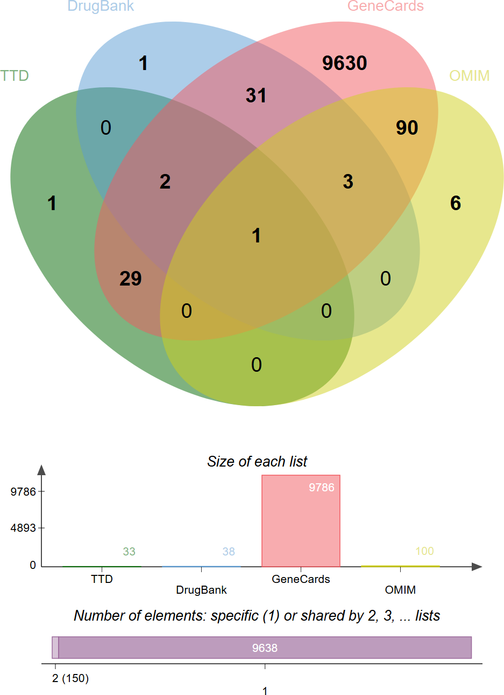
分析：该图回答「各库如何重叠」。下游分析不直接用全量圈，而用 GeneCards≥40（4253）∪ CTD curated ∪ OMIM ∪ TTD ∪ DrugBank 得 4269。COPD 非基因条目与小鼠 CCL12 已剔除。韦恩结构支持多库互补，不单独证明某一库更「正确」。
结果二 · 药物成分与单药覆盖
药物成分与单药覆盖 · 单药×疾病交集
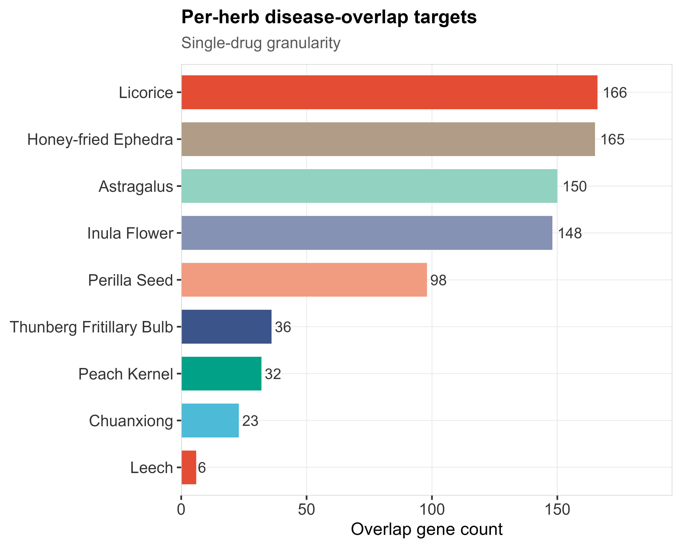
分析：柱高反映各味药靶点与 IPF 下游集的重叠规模。甘草、蜜麻黄、黄芪、旋覆花贡献大；水蛭仅 known 口径下重叠为 6。柱高≠药效或重要性排序，只描述计算覆盖。
药物成分与单药覆盖 · 成分×疾病交集

分析：展示哪些化学成分在疾病重叠靶点上连接更多基因。高连接成分多为黄酮类等跨药共享实体，后续 HCTP 中常以 same* 出现。
药物成分与单药覆盖 · 成分×疾病（按药分面）

分析：分面显示每味药内部哪些成分驱动与疾病基因的连接。便于区分「该药特异成分」与「跨药重复化学实体」。
药物成分与单药覆盖 · 药味成分 UpSet
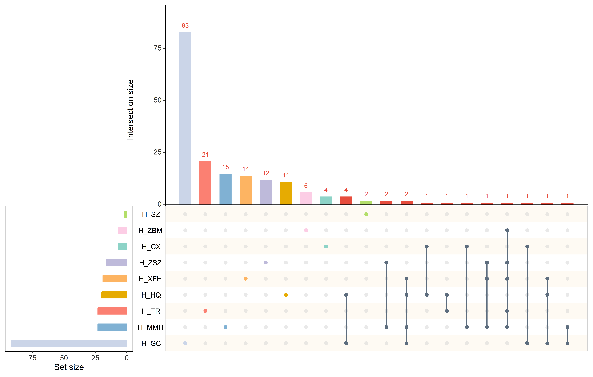
分析：UpSet 量化跨药共享成分集合。共享成分会抬高网络中成分节点 Degree（如槲皮素 same15），讨论枢纽时必须声明「多药共有化学实体」。
结果三 · 药病交集与 HCTP 网络
药病交集与 HCTP 网络 · 药病交集韦恩
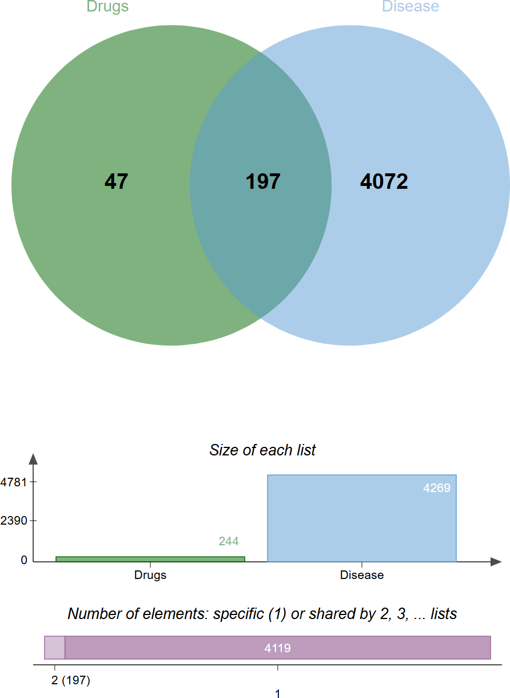
分析：核心定量结果：197 个基因同时出现在方剂靶点空间与 IPF 下游疾病集。高重叠支持提出机制假说，不支持临床有效外推。
药病交集与 HCTP 网络 · HCTP 列状网络

分析：列状布局便于沿 A→B→C→D 阅读。Degree 枢纽含 PTGS2、多药共享槲皮素（same15）、HSP90AA1、ESR1 等。Degree 高只说明拓扑中心性，不是湿实验验证。
药病交集与 HCTP 网络 · HCTP 椭圆布局

分析：与列状图为同一边集的不同投影，用于检查布局依赖的视觉聚集是否稳定。结论仍以表格 Degree / 边表为准。
药病交集与 HCTP 网络 · 药–成分–靶–通路桑基

分析：桑基宽度近似流量，突出哪条药–成分路径汇入主要通路模块。适合总览，不适合读取精确基因名单（名单见结果表）。
药病交集与 HCTP 网络 · 筛选成分桑基分面

分析：分面把高流量成分拆开，便于检查单个成分进入哪些靶/通路。与成分柱状图、UpSet 互相印证。
药病交集与 HCTP 网络 · 药味×通路覆盖热图
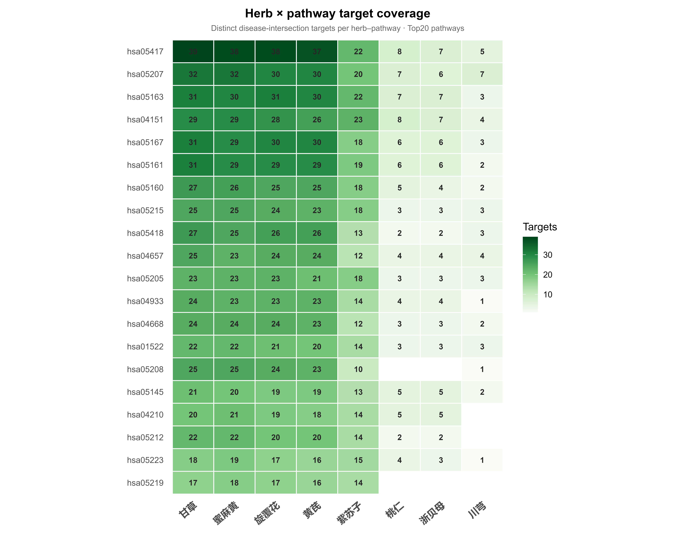
分析：颜色深浅表示该药味靶点命中某通路基因的覆盖强度。可用于提出「多药协同作用于同一模块」的假说，不可排序药效。
结果四 · GO/KEGG 富集与官方通路图
GO/KEGG 富集与官方通路图 · GO 气泡图
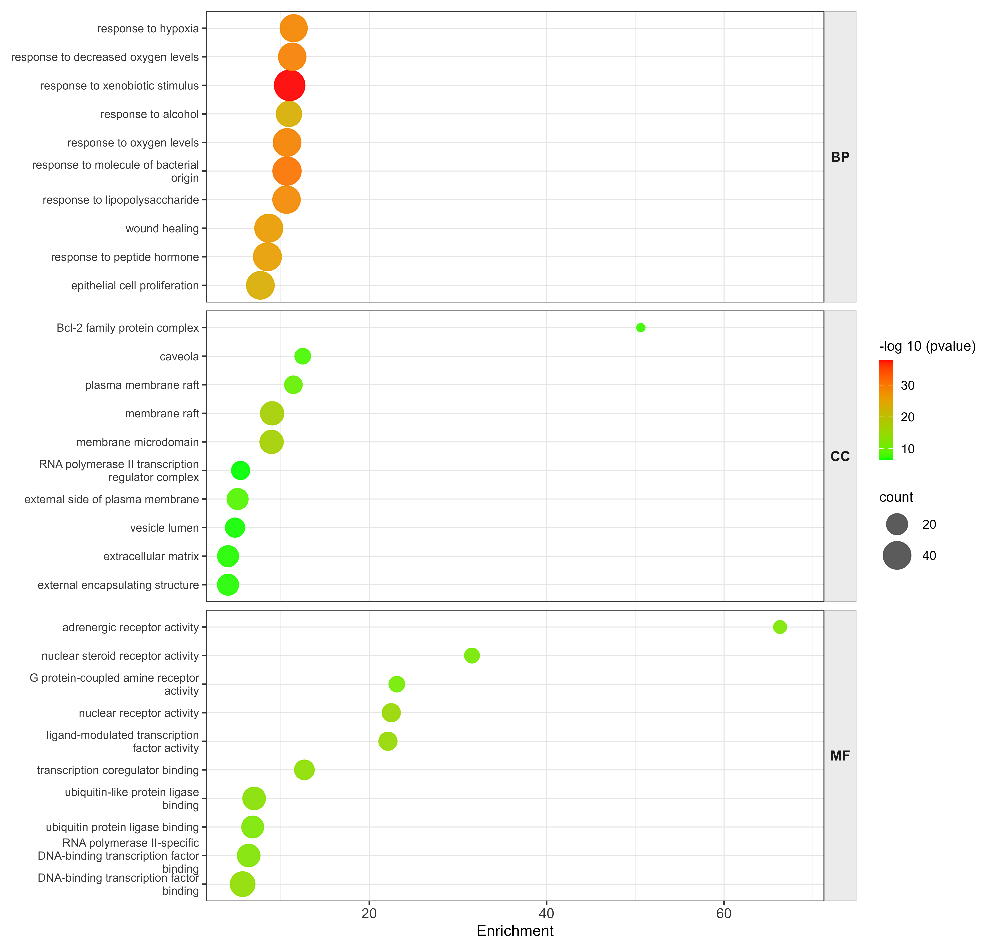
分析：气泡图给出交集基因的功能主题轮廓。优先阅读与炎症、凋亡、细胞外基质/成纤维相关的 BP；具体条目以富集表 padj 与 geneID 为准。
GO/KEGG 富集与官方通路图 · GO 柱状图

分析：柱状图强调 −log10(padj) 或计数对比，便于挑 Top 条目写讨论。与气泡图信息互补，不重复计数。
GO/KEGG 富集与官方通路图 · KEGG 棒棒糖

分析：Top 通路名称含脂质/剪切应力–动脉粥样硬化、AGE-RAGE、肿瘤与感染类。在 IPF 语境下，这些名称多数应解释为共享炎症–增殖–凋亡模块富集，而不是方剂「抗动脉粥样硬化/抗肿瘤」结论。
GO/KEGG 富集与官方通路图 · KEGG 柱状图
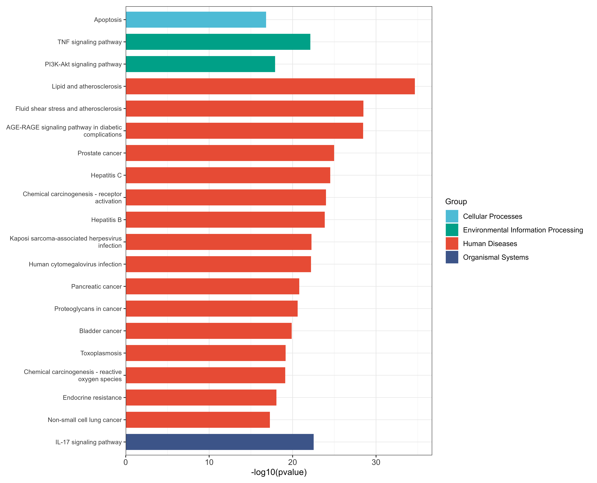
分析：与棒棒糖同一富集表的柱形展示，便于比较 Count。193 条通路项记录在结果表；正文只展开与 IPF 假说相关的轴（如 IL-17、TNF、PI3K-Akt、Apoptosis）。
GO/KEGG 富集与官方通路图 · KEGG 圈图
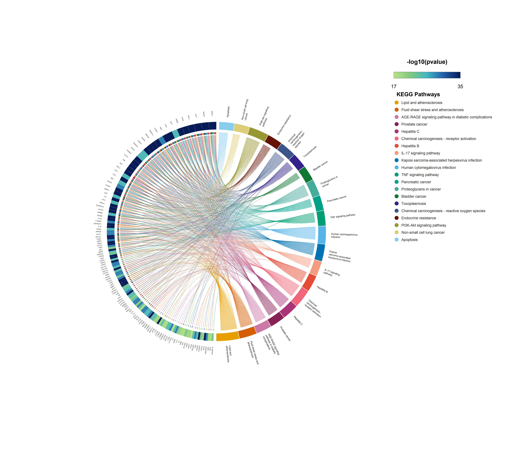
分析：圈图展示基因在多通路间的共享。若多条「疾病命名」通路共享同一批核心基因，更支持模块解释而非多种独立疾病指向。
GO/KEGG 富集与官方通路图 · KEGG官方 hsa05417

分析：脂质与动脉粥样硬化相关通路居 Top，多由炎症/脂质代谢基因驱动；对照 IPF 文献作交叉提示，不作动脉粥样硬化诊断。 本课题统计：Count=46，padj=6.51e-33。 图像仅学术用途（KEGG 条款）。
GO/KEGG 富集与官方通路图 · KEGG官方 hsa05418

分析：剪切应力/血管相关通路富集，可与肺血管重塑假说对照，仍属计算提示。 本课题统计：Count=35，padj=3.44e-27。 图像仅学术用途（KEGG 条款）。
GO/KEGG 富集与官方通路图 · KEGG官方 hsa04933

分析：AGE-RAGE 常与炎症交叉出现，作交叉通路提示。 本课题统计：Count=31，padj=3.44e-27。 图像仅学术用途（KEGG 条款）。
GO/KEGG 富集与官方通路图 · KEGG官方 hsa05215

分析：前列腺癌等肿瘤通路名：增殖/凋亡基因共享，不作抗肿瘤声称。 本课题统计：Count=29，padj=7.58e-24。 图像仅学术用途（KEGG 条款）。
GO/KEGG 富集与官方通路图 · KEGG官方 hsa05160
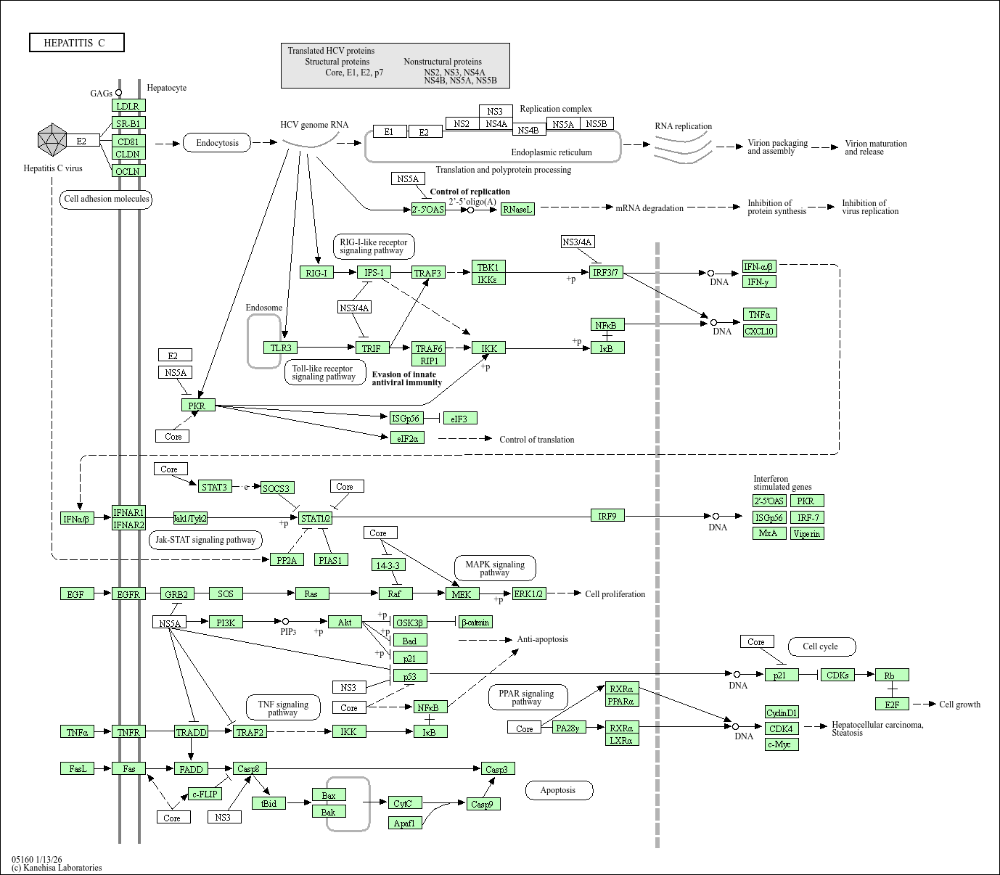
分析：肝炎病毒通路名同理，解释为免疫–炎症共享基因。 本课题统计：Count=33，padj=1.79e-23。 图像仅学术用途（KEGG 条款）。
GO/KEGG 富集与官方通路图 · KEGG官方 hsa05207

分析：化学致癌–受体激活：受体/转录相关基因富集的计算读出。 本课题统计：Count=37，padj=4.82e-23。 图像仅学术用途（KEGG 条款）。
GO/KEGG 富集与官方通路图 · KEGG官方 hsa05161
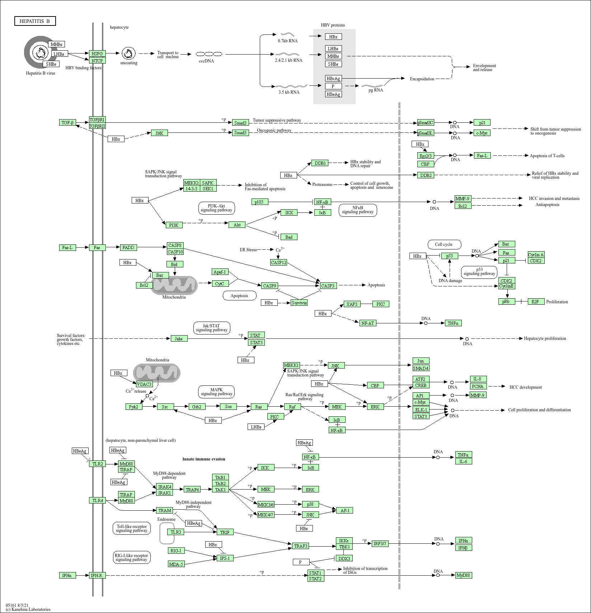
分析：乙肝通路名：免疫基因共享。 本课题统计：Count=33，padj=5.76e-23。 图像仅学术用途（KEGG 条款）。
GO/KEGG 富集与官方通路图 · KEGG官方 hsa04657
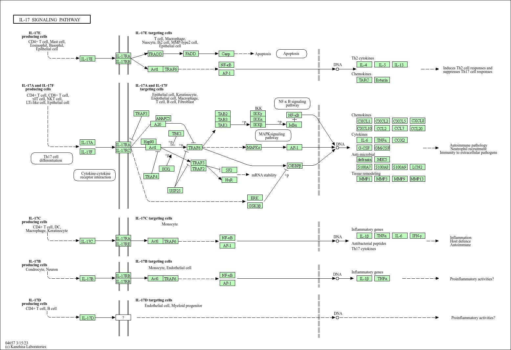
分析：IL-17 信号与黏膜/中性粒炎症相关，IPF 模型文献中有成纤维活化讨论点，可作优先假说轴之一。 本课题统计：Count=26，padj=1.08e-21。 图像仅学术用途（KEGG 条款）。
GO/KEGG 富集与官方通路图 · KEGG官方 hsa05167

分析：疱疹病毒感染通路名：免疫共享。 本课题统计：Count=34，padj=1.73e-21。 图像仅学术用途（KEGG 条款）。
GO/KEGG 富集与官方通路图 · KEGG官方 hsa05163
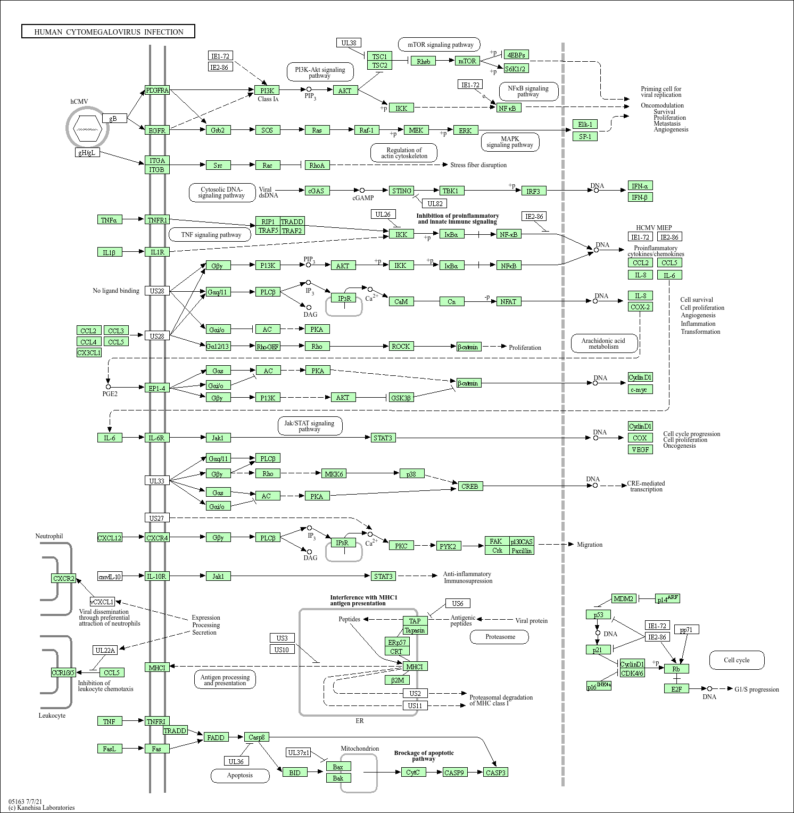
分析：巨细胞病毒通路名：免疫共享。 本课题统计：Count=36，padj=1.78e-21。 图像仅学术用途（KEGG 条款）。
GO/KEGG 富集与官方通路图 · KEGG官方 hsa04668

分析：TNF 信号是炎症–纤维化讨论中的常见轴，可与 IPF 文献对照。 图像仅学术用途（KEGG 条款）。
GO/KEGG 富集与官方通路图 · KEGG官方 hsa05212
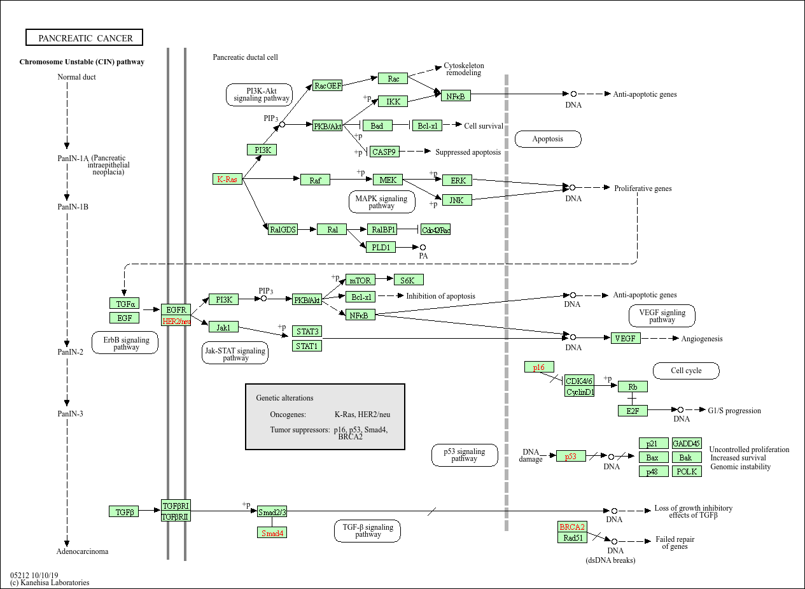
分析：胰腺癌通路名：增殖/凋亡共享。 图像仅学术用途（KEGG 条款）。
GO/KEGG 富集与官方通路图 · KEGG官方 hsa05205

分析：肿瘤蛋白多糖通路：基质/信号共享。 图像仅学术用途（KEGG 条款）。
GO/KEGG 富集与官方通路图 · KEGG官方 hsa05219
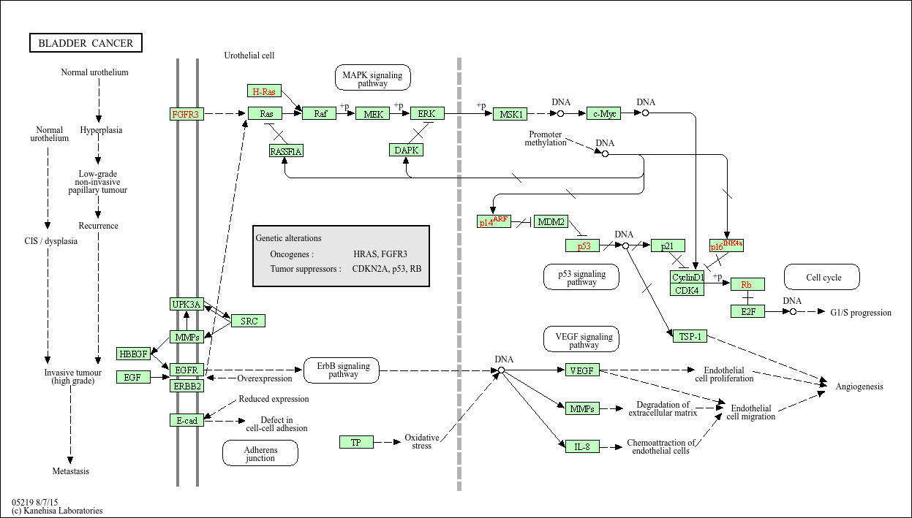
分析：膀胱癌通路名：共享模块。 图像仅学术用途（KEGG 条款）。
GO/KEGG 富集与官方通路图 · KEGG官方 hsa05145
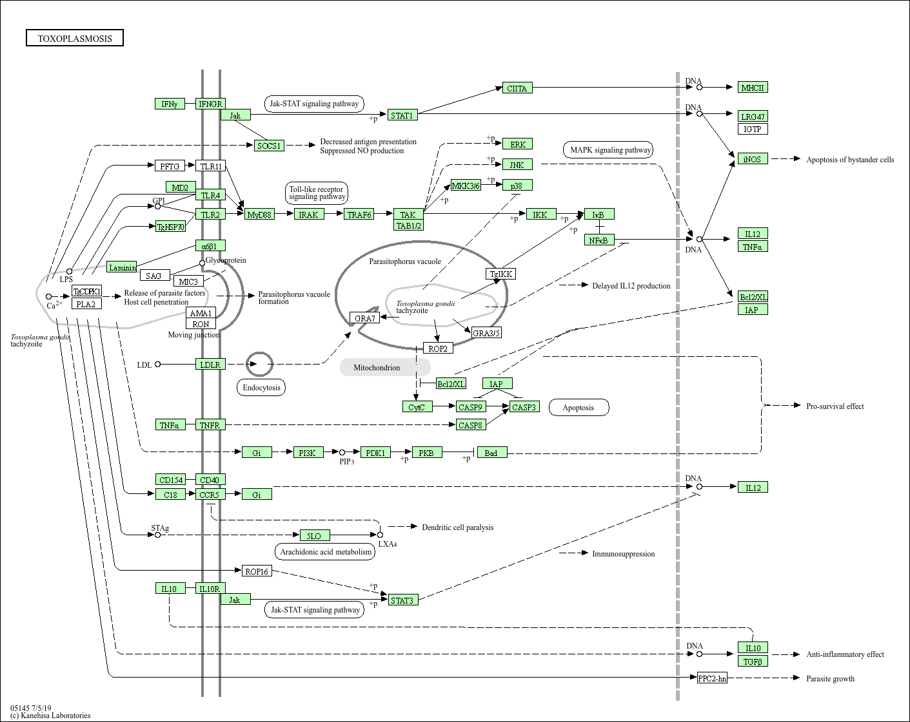
分析：弓形虫通路名：免疫共享。 图像仅学术用途（KEGG 条款）。
GO/KEGG 富集与官方通路图 · KEGG官方 hsa05208
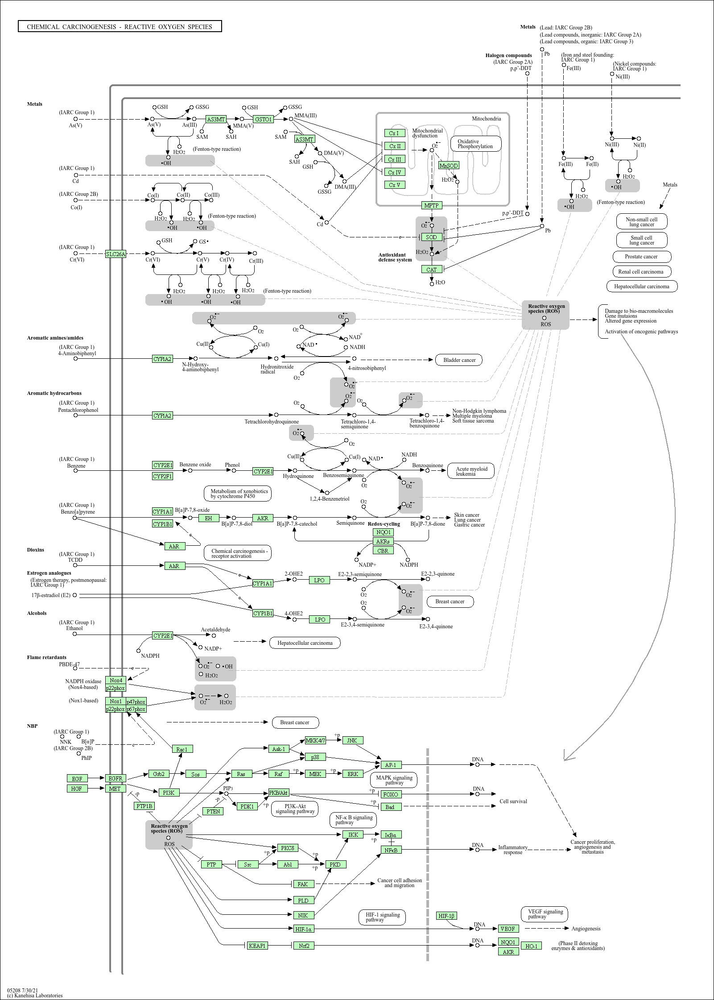
分析：ROS 化学致癌通路：氧化应激基因可对照肺损伤语境，不作致癌结论。 图像仅学术用途（KEGG 条款）。
GO/KEGG 富集与官方通路图 · KEGG官方 hsa01522
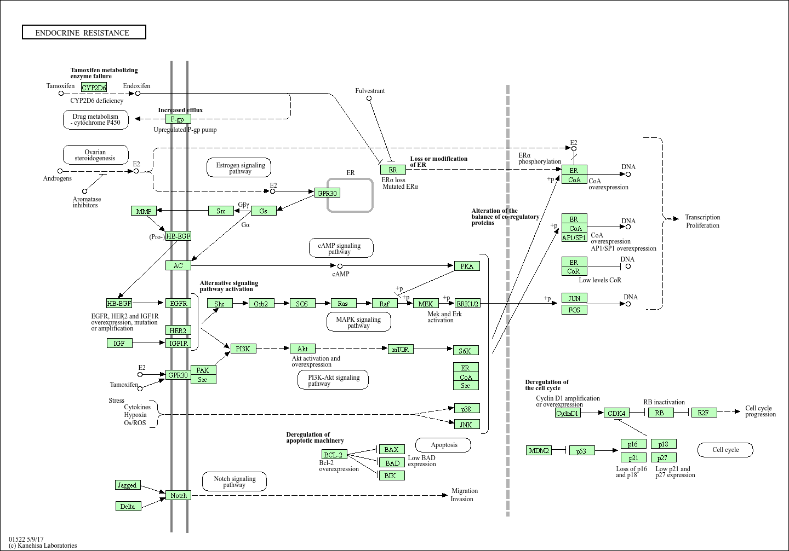
分析：内分泌抵抗：受体信号共享。 图像仅学术用途（KEGG 条款）。
GO/KEGG 富集与官方通路图 · KEGG官方 hsa04151
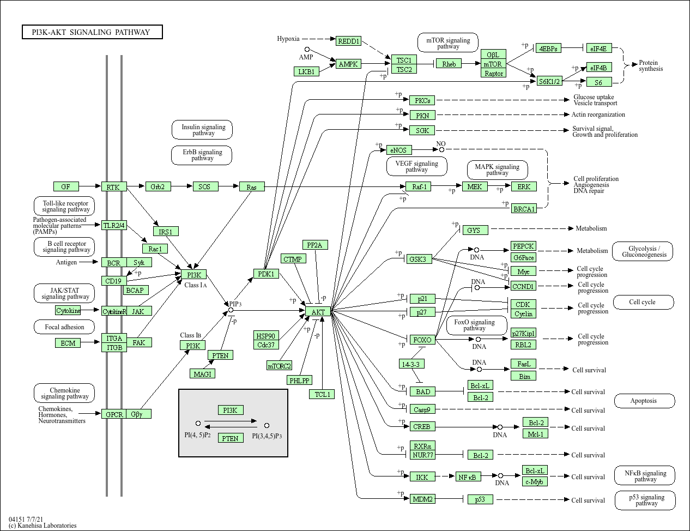
分析：PI3K-Akt 为生长/存活常用轴，可与成纤维活化文献对照。 图像仅学术用途（KEGG 条款）。
GO/KEGG 富集与官方通路图 · KEGG官方 hsa05223

分析：非小细胞肺癌通路名：与肺脏同器官但不等于 IPF 机制证实。 图像仅学术用途（KEGG 条款）。
GO/KEGG 富集与官方通路图 · KEGG官方 hsa04210

分析：凋亡通路与细胞命运相关，可纳入炎症–重塑假说网络。 图像仅学术用途（KEGG 条款）。
结果五 · STRING PPI
STRING PPI · STRING 官方图
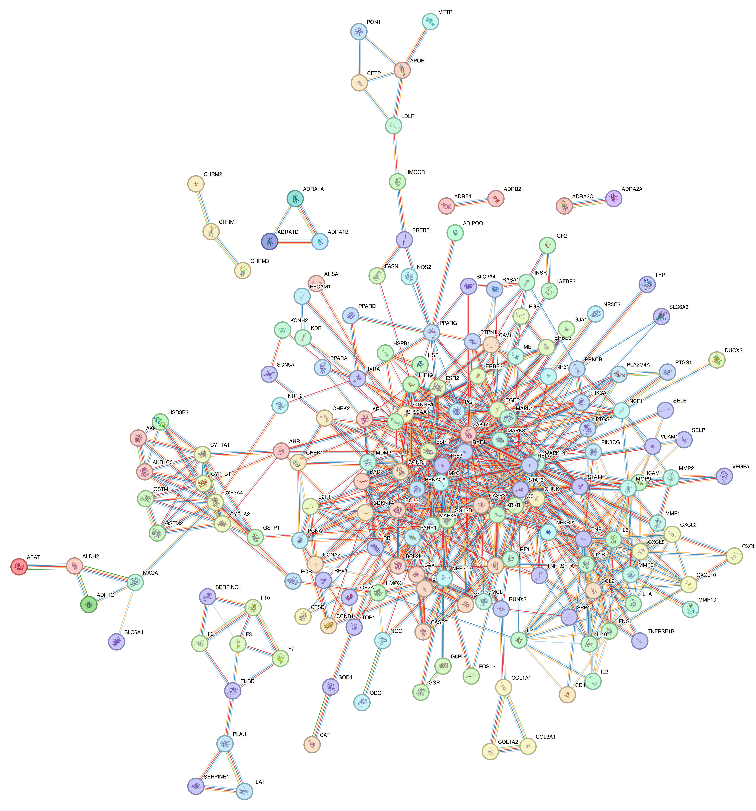
分析：官方图给出互作概览。主阈值 score≥900 时节点 173、边 687；25 个基因在该阈值无边（见 PPIQC）。
STRING PPI · PPI 代码布局

分析：代码布局强调核心互作团。可与 Degree 图一起挑选候选枢纽蛋白，供后续对接/实验设计，但本身不是验证。
STRING PPI · PPI Degree 视图

分析：Degree 视图突出互作度数分布，便于与 HCTP 枢纽交叉点名（如炎症相关酶/受体）。交叉点名仍属假说生成。
讨论
- 高重叠率支持机制假说生成，不支持疗效外推。
- HCTP/PPI 枢纽与富集模块指向炎症–应激–凋亡轴；肿瘤/感染通路名按共享模块解读。
- 共享成分（UpSet / same*）会抬高成分 Degree，须与药味特异靶点区分。
- 水蛭 known 规模小，凝血相关基因为交叉假说线索。
局限
- 无湿实验、无对接/MD；DisGeNET 未纳入。
- BATMAN 全库 browse 路径待验证；本课题仅按药 API + known。
- KEGG 官方图仅学术用途。
方法摘要
细节见 方法论报告（同图册的读图向分析）。数字以 交付文件/报告/_stats.json 为准。